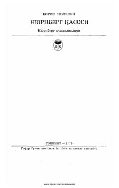

NQNyu-York sudi va fashizm jinoyatlari haqidagi tarixiy xotiralar kitobi.
Ushbu kitob fashizm ustidan qozonilgan g'alaba va Nyu-York jarayoni haqidagi xotiralar va hujjatli hikoyalardan iborat. Muallif urushdan keyingi davr voqealari va fashizm jinoyatlarini fosh etuvchi muhim tarixiy dalillarni bayon qiladi.